Eperly Lite - Basic Operations Manual
| Author | Mark Angelo Tarvina |
|---|---|
| mttarvina@gmail.com | |
| Category | Projects Manuals |
| Article Number | 1 |
| Date Published | 01.Jan.2024 |
| Date Updated | 08.Jan.2024 |
I. Overview
This tutorials provides the necessary information to configure the Eperly Lite device to connect to your WiFi network for you to be able to access the control panel and operate the lamp.
Eperly Lite is a WiFi controlled, USB powered, RGBW night lamp with different 3D crystal ball patterns to choose from. It has a predetermined color palette for the LED color setting but can also be fine tuned by adjusting the individual color components: red, green, and blue. It has three different light patterns: static, rotate, and heartbeat. It can be configured through USB and an online serial monitor; no need to install any apps on your WiFi capable device.
II. Configuration Setup
Configuring Eperly Lite only requires three components:
Eperly Lite lamp
USB-A to USB-Micro Cable (make sure that this is a data cable, not a charging cable)
Laptop or PC device connected to the internet, and with Google Chrome installed
Refer to the diagram below for the initial configuration:
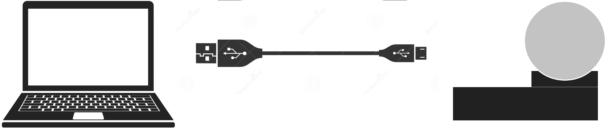
III. Configuration Steps (First Time Setup)
These configuration steps outline the procedure on how to save your WiFi credentials into the device for it to be able to connect to your WiFi network. These steps are applicable to the following firmware versions of the device:
- v1.0
- v1.1
The firmware version is displayed after the logo once you power up the device (plug the USB from any compatible adapter)
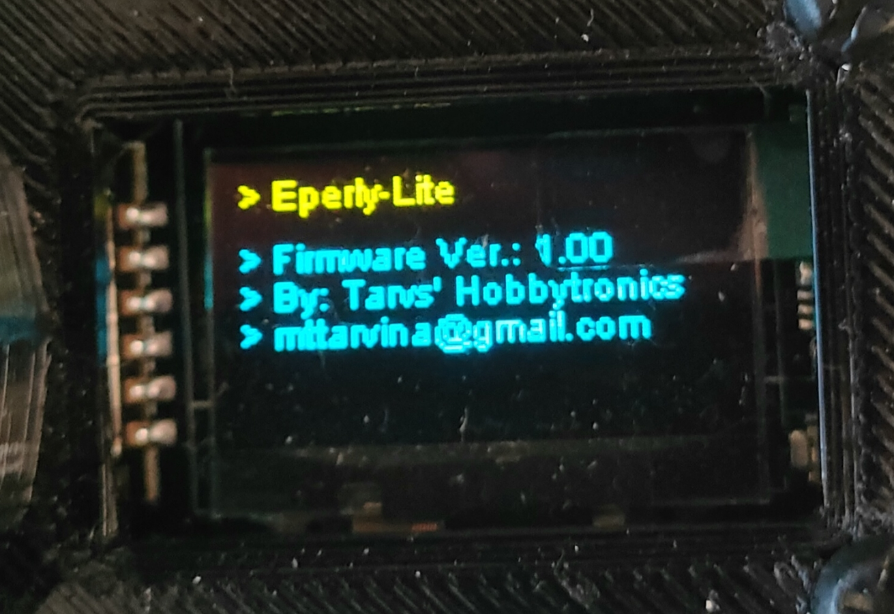
For first time setup, the device will indicate that no WiFi credentials have been saved as shown below:
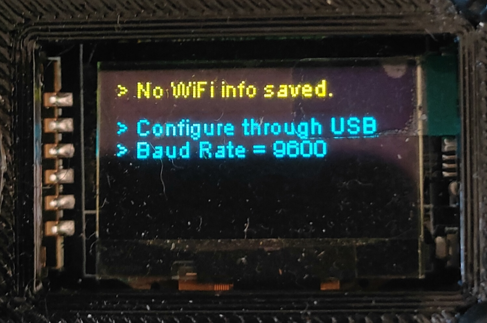
III.A. Step 1: Access the online serial monitor app
First, make sure that your device is unplugged from your PC/laptop.
On your laptop/PC, open your Google Chrome browser and access the site below (note that this web app seems to be only compatible with Google Chrome at the moment):
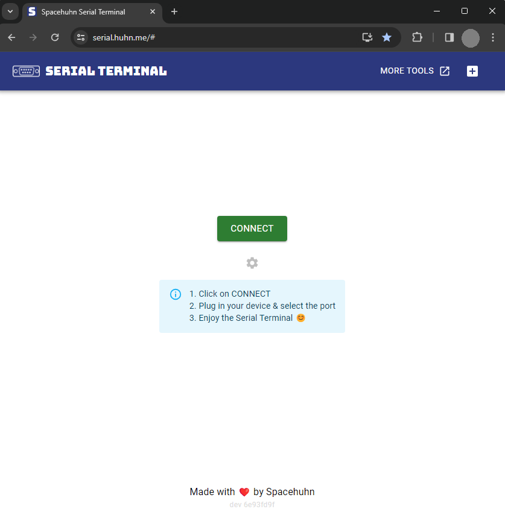
III.B. Step 2: Setup the connection settings
Click the SETTINGS icon and configure it similar to the image shown below, and click SAVE:
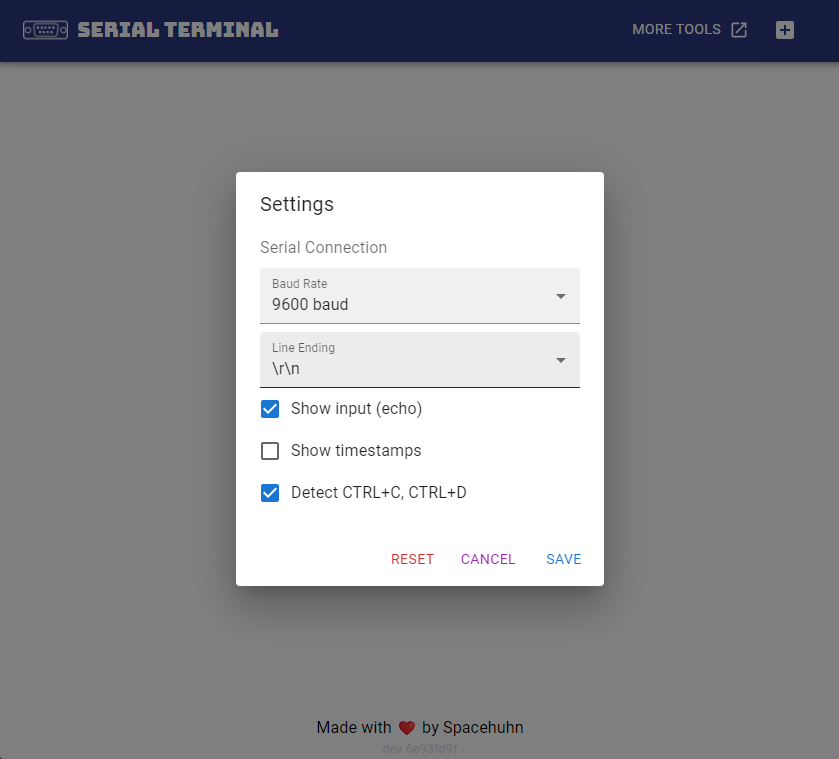
III.C. Step 3: Connect your device
Plug your device to your PC/laptop and immediately click the CONNECT button and a window will pop-up for you to select a COM port. If no other similar device is connected in your PC/laptop, then it will only show one connected device. Choose that COM port and click CONNECT:
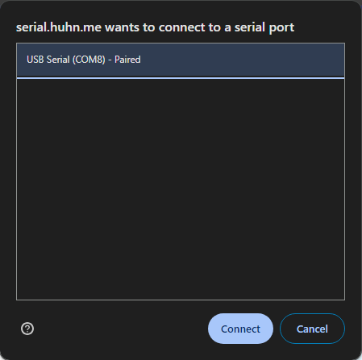
III.D. Step 4: Configure WiFi credentials through serial
The web app will then redirect you to a serial terminal view similar to one shown below:
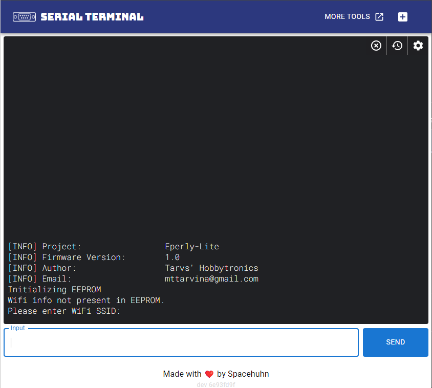
Notice that the last prompt requires you to enter the WiFi SSID. You can type it in the input text field, click SEND, then it will display a confirmation prompt for you to verify that your input is correct. Type "Y" or "y" in the input text field if the WiFi network is correct. Type "N" or "n" if you want to re-type.
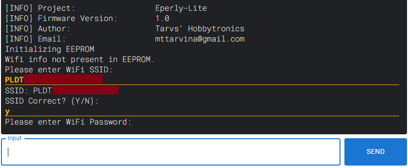
Next is for you to input your WiFi password. Similar to previous step, type your password in the input text field, click SEND, then it will display a confirmation prompt for you to verify that your input is correct. Type "Y" or "y" in the input text field if the WiFi password is correct. Type "N" or "n" if you want to re-type.
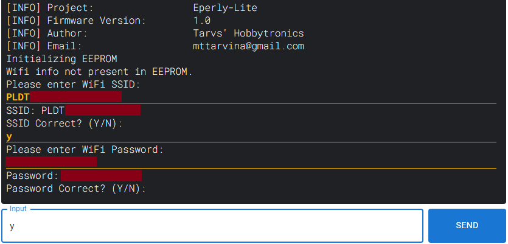
After setting up the WiFi credentials, the device will try to connect to your WiFi network.
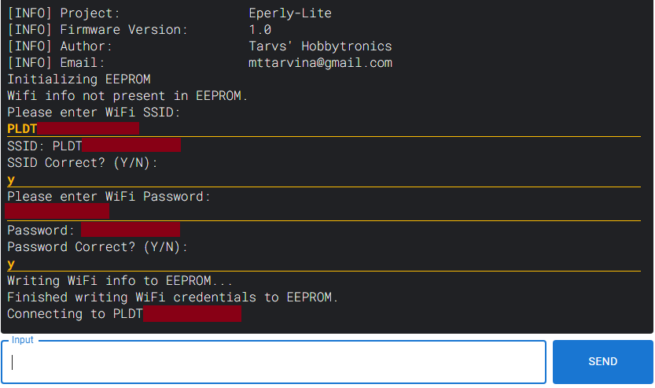
Once the device connects successfully, it will publish it's IP address both in the serial terminal and in the LCD screen of the device.
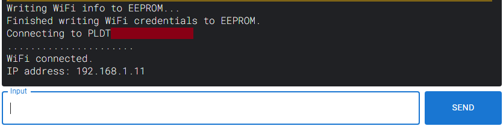
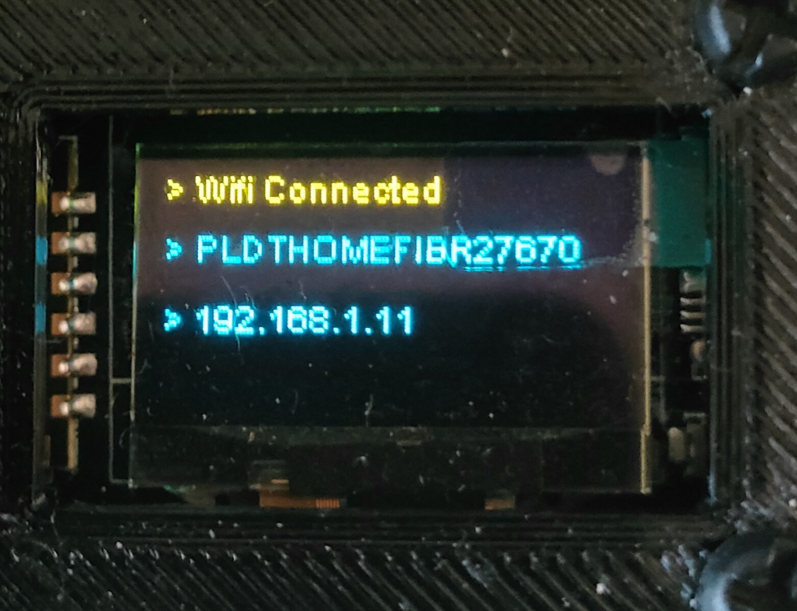
III.E. Step 5: Access the control panel
Using any WiFi capable device (PC/laptop/Smartphone), make sure that this device is connected to the same WiFi network that the lamp is connected to. Open your web browser app and type the IP address indicated by the device to access the control panel. From here, you can now control the lamp remotely.
For example, here's how it looks for a device with firmware version: v1.0, and an IP address of 192.168.1.11
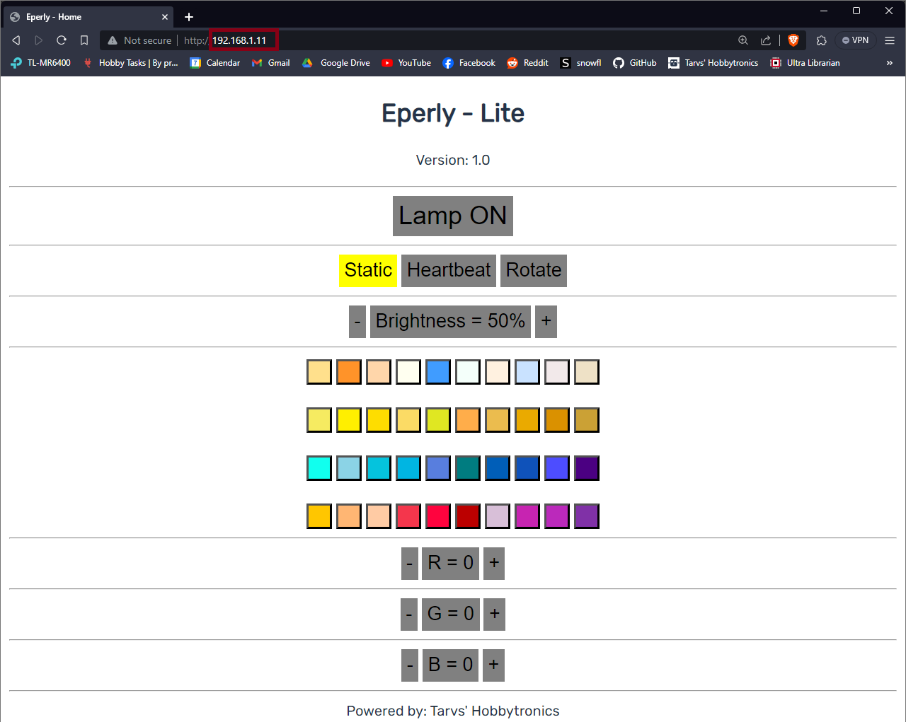
And here's how it looks for a device with firmware version: v1.1, and an IP address of 192.168.1.100
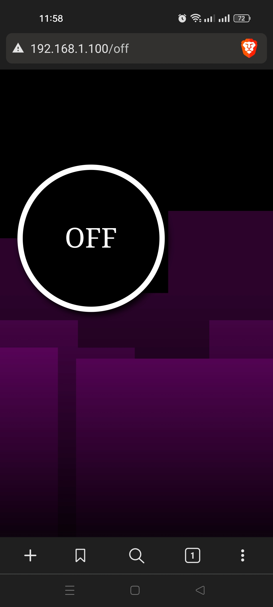
IV. Normal Operation
During normal operation, you can just plug in the device to any USB adapter and it will automatically connect to your WiFi network. There is no need to access the device through a serial terminal. Wait for it to connect to the WiFi network and it will display it's IP address. Follow instructions on part III.E. Step 5 to access the control panel of the lamp.
V. Changing WiFi Network
If you want your lamp to connect to other WiFi network then follow the steps below (most steps are similar to the steps indicated in Part III):
V.A. Step 1: Access the online serial monitor app
First, make sure that your device is unplugged from your PC/laptop.
On your laptop/PC, open your Google Chrome browser and access the site below:
V.B. Step 2: Setup the connection settings
Click the SETTINGS icon and configure it similar to the image shown below, and click SAVE:
V.C. Step 3: Connect your device
Plug your device to your PC/laptop and immediately click the CONNECT button and a window will pop-up for you to select a COM port. If no other similar device is connected in your PC/laptop, then it will only show one connected device. Choose that COM port and click CONNECT:
V.D. Step 4: Configure WiFi credentials through serial
This step is similar to Part III.D. Step 4 but the only thing different this time is that there is already a WiFi credential saved into the device. In the serial terminal, right before it connects to the previously configure WiFi network, it displays a prompt if the user wants to change the WiFi info saved into the device.
NOTE: The device will only wait for up to 8 seconds to ask for user input. If there is no user input within this time, then it proceeds to connect to the previously configured WiFi info.
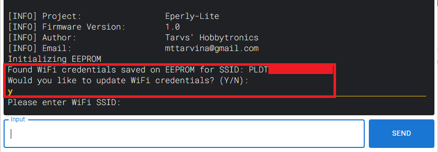
Follow the instructions indicated by the device prompt which is similar to Part III.D. Step 4 to change your WiFi connection. Wait for the device to successfully connect to the new WiFi network and publish it's IP Address.
V.E. Step 5: Access the control panel
Using any WiFi capable device (PC/laptop/Smartphone), make sure that this device is connected to the new WiFi network that the lamp is connected to. Open your web browser app and type the IP address indicated by the device to access the control panel. From here, you can now control the lamp remotely.